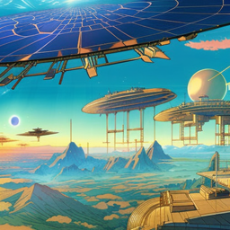
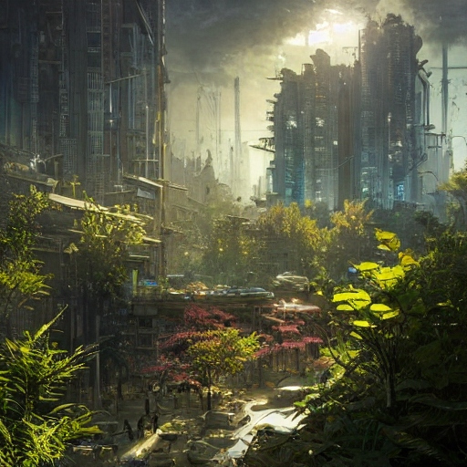

SolarpunkSolarpunk é um gênero de ficção científica e estética que imagina um futuro mais positivo e sustentável. Ele se concentra em soluções para questões ambientais e sociais que usam tecnologias limpas e inclusivas. A visão de futuro de Solarpunk tem como base o otimismo, a diversidade, a comunidade e a cooperação. |
|

A literatura Cyberpunk é um gênero de ficção científica que se concentra na interação entre a tecnologia e a cultura. Ela usa elementos futuristas, como computadores, inteligência artificial e realidade virtual, para expressar sua conexão com a tecnologia. A literatura Cyberpunk também usa elementos culturais, como subculturas, política e moral, para expressar sua visão de um futuro melhor. A literatura Cyberpunk é uma mistura única de elementos tecnológicos e culturais que trabalham juntos para criar um estilo único. Solarpunk acredita que é possível construir um futuro melhor com base nos recursos existentes e nos avanços tecnológicos. Ele aborda questões como mudança climática, desigualdade social e arquitetura urbana de maneira positiva e criativa. Solarpunk também se concentra no uso de energia solar e outras fontes limpas de energia, como eólica e geotérmica, para abastecer a vida moderna. Outros tópicos importantes incluem a agricultura orgânica, a conservação de energia, o transporte público e o conceito de cidades inteligentes. A estética de Solarpunk é altamente diversa, variando do punk e do cyberpunk ao steampunk e ao biopunk. Além disso, Solarpunk acredita que a inovação social e tecnológica é a chave para um futuro melhor. Para isso, é importante desenvolver relações saudáveis, construir comunidades resilientes e alcançar a justiça social. O movimento Solarpunk também apoia a diversidade na tecnologia e incentiva o empreendedorismo criativo. Por fim, o Solarpunk acredita na criação de um futuro mais sustentável e justo por meio da colaboração de todas as partes. O Solarpunk acredita que é possível administrar os recursos naturais de forma sustentável e equilibrada. Isso é alcançado por meio do uso de energias renováveis, da redução do desperdício de recursos e da proteção dos ecossistemas naturais. O Solarpunk também incentiva a construção de infraestruturas que incorporem elementos naturais como água, terra, ar e luz solar. O Solarpunk acredita que, ao usar conscientemente os recursos naturais, é possível criar um futuro melhor para todos. Além disso, o Solarpunk incentiva o uso de tecnologias limpas, como eletrificação de veículos, armazenamento de energia renovável, bioenergia e energia solar. Também incentiva a adoção de práticas de produção mais limpas, como agricultura orgânica, reciclagem, redução de desperdícios e uso de materiais reciclados. O Solarpunk acredita que usar os recursos naturais de forma responsável, com base na preservação ambiental, é uma chave para um futuro melhor. |
O que é a agricultura orgânica?A agricultura orgânica é um sistema de produção alimentar que se concentra na preservação dos recursos naturais, baixo uso de agrotóxicos, mínimo uso de energia e respeito ao meio ambiente. Esta abordagem leva em conta as interações entre os seres vivos e a natureza, usando métodos que minimizam a destruição dos ecossistemas. Isso significa que os agricultores orgânicos usam técnicas naturais, como compostagem e rotação de culturas, em vez de pesticidas químicos ou fertilizantes artificiais. Um modo sustentável de economizar energia é mudar para fontes de energia renovável, como solar ou eólica. Estas fontes limpas e renováveis são uma ótima maneira de diminuir o uso da energia gerada a partir de combustíveis fósseis. Outras maneiras de economizar energia incluem usar lâmpadas de LED, ajustar a temperatura da sua casa para níveis mais baixos, desligar os equipamentos que não estão sendo usados e instalar dispositivos de economia de energia. Uma cidade inteligente é uma cidade que usa tecnologia avançada para melhorar a qualidade de vida dos seus cidadãos. Elas usam sistemas de monitoramento e controle para otimizar o uso dos recursos, como energia, água e transporte. Estas cidades também usam a tecnologia para fornecer serviços públicos mais eficientes e melhorar a segurança. Por fim, as cidades inteligentes usam a tecnologia para melhorar a comunicação entre os governos e os cidadãos. |

O que é empreendedorismo criativo?O empreendedorismo criativo é um processo de desenvolvimento de negócios que se concentra na criação de soluções inovadoras para problemas sociais ou ambientais. Ele usa ferramentas como design thinking, modelagem de negócios e crowdsourcing para criar soluções criativas. O empreendedorismo criativo incentiva a pensar de forma inovadora para desenvolver modelos de negócios que melhorem a qualidade de vida das pessoas e contribuam para uma economia mais sustentável. Design thinking é um processo de resolução de problemas que usa uma abordagem centrada no usuário para criar soluções inovadoras. Ele envolve ouvir as necessidades dos usuários, definir claramente o problema, gerar ideias, experimentar e ajustar. O design thinking também incentiva o feedback contínuo dos usuários para ajudar a melhorar a eficácia das soluções. É uma ferramenta útil para a criação de soluções inovadoras para problemas sociais ou ambientais. Modelagem de negócios é o processo de desenvolvimento de um plano de negócios. Ele envolve a identificação dos recursos e atividades necessárias para um negócio ter sucesso, bem como os custos associados. A modelagem de negócios também envolve a definição de metas e a avaliação dos riscos e custos para ajudar a maximizar o lucro. Ela é uma ferramenta útil para desenvolver e ajustar modelos de negócios que sejam ambientalmente e socialmente responsáveis. |

A estética solarpunkA estética Solarpunk é altamente diversa, variando do punk e do cyberpunk ao steampunk e ao biopunk. Ela também se destaca por seu uso de tons de verde para expressar sua conexão com a natureza e o meio ambiente. A estética Solarpunk também usa elementos orgânicos e tecnológicos para expressar sua visão de um futuro mais sustentável e inclusivo. Ela combina elementos de diversos gêneros, como design de moda, arte, arquitetura, música e literatura, para criar um estilo único. A estética biopunk se concentra na interação entre a tecnologia e a natureza. Ela usa elementos orgânicos, como plantas, animais, insetos e fungos, para expressar sua conexão com a natureza e o meio ambiente. A estética biopunk também usa elementos tecnológicos, como computadores, robótica e inteligência artificial, para expressar sua visão de um futuro melhor. A estética biopunk é uma mistura única de elementos orgânicos e tecnológicos que trabalham juntos para criar um estilo único. A estética steampunk é uma combinação única de elementos históricos e tecnológicos. Ela usa elementos históricos, como vestimentas vitorianas e tecnologias de vapor, para expressar sua conexão com o passado. A estética steampunk também usa elementos tecnológicos, como computadores, robótica e inteligência artificial, para expressar sua visão de um futuro melhor. A estética steampunk é uma mistura única de elementos históricos e tecnológicos que trabalham juntos para criar um estilo único. A estética cyberpunk se concentra na interação entre a tecnologia e a cultura. Ela usa elementos futuristas, como tecnologias avançadas e computadores, para expressar sua conexão com a tecnologia. A estética cyberpunk também usa elementos culturais, como moda, arte e música, para expressar sua visão de um futuro melhor. A estética cyberpunk é uma mistura única de elementos tecnológicos e culturais que trabalham juntos para criar um estilo único. |